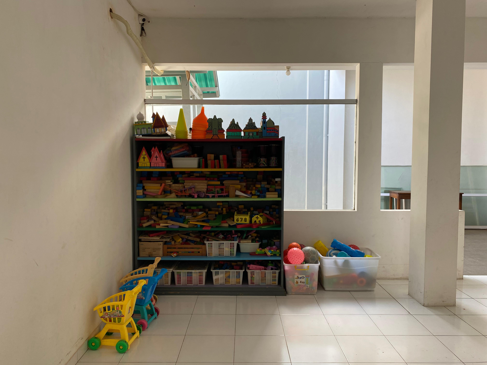
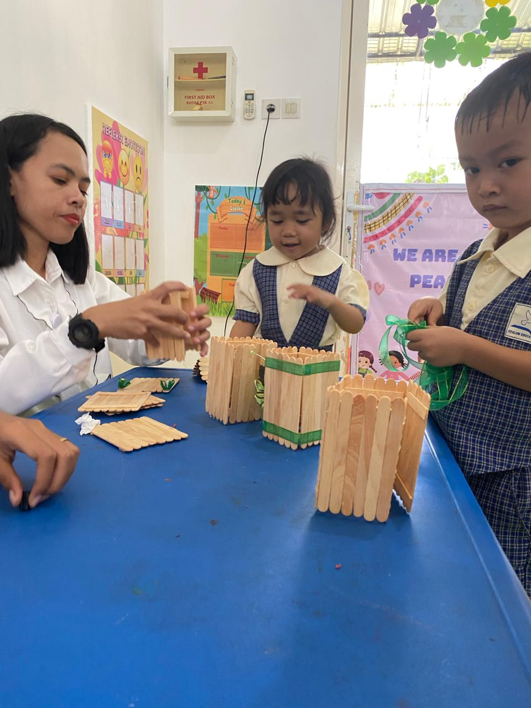

Playgroup di Syalom Education Center Probolinggo menawarkan lingkungan yang aman dan mendukung untuk anak-anak memulai perjalanan pendidikan mereka. Kami fokus pada perkembangan holistik anak melalui bermain, belajar, dan interaksi sosial.
Tempat bermain ayunan yang aman untuk anak-anak, memberikan ruang bagi mereka untuk bersosialisasi sambil menikmati waktu bermain mereka.
Pojok baca yang nyaman dengan berbagai buku edukatif yang membantu merangsang minat baca sejak dini.
Rak mainan yang dilengkapi dengan berbagai mainan edukatif untuk mengembangkan kreativitas dan keterampilan motorik anak.
Setiap kelas dilengkapi dengan kotak P3K untuk menjaga keamanan dan keselamatan anak-anak selama berada di sekolah.
Prosotan yang aman dan menyenangkan, memberi anak-anak kesempatan untuk bermain aktif di luar ruangan.
Ruang kelas yang nyaman dan dirancang untuk menunjang kegiatan belajar dengan suasana yang kondusif bagi anak-anak.
Playgroup Syalom Education Center menawarkan berbagai ekstrakurikuler untuk mengembangkan bakat dan minat anak.
Ekstrakurikuler Art & Craft membantu anak-anak mengembangkan kreativitas dan keterampilan seni dengan berbagai proyek seni yang menyenangkan.
Kegiatan menari memberikan kesempatan bagi anak-anak untuk bergerak dan mengekspresikan diri mereka secara kreatif.